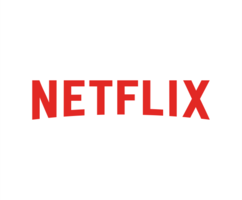
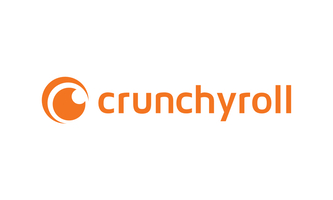

Hier findest du eine gute übersicht, welche Anbieter legal sind!
Und auch welche sich Lohnen

Auf dem dritten Platzt, steht Netflix, da heutzutage eh fast jeder ein Neflix Konto besitzt, dürften hier auch keine
zusätzlichen Kosten anfallen. Viele wissen garnicht, das man auf Netflix auch gut Anime schauen kann, man muss nur mal ein paar
Titel suchen und wird dann relativ schnell fündig als Beispiel kann man Akame ga Kill oder Your Name finden. Netflix hat nicht nur
Ein paar starke exlusiv Titel, wie Seven deadly sins oder Kakegurui, sondern auch eine üppige Auswahl an Klassikern wie z.B. Jojos bizzare
Adventure. Netflix legt gerade bei den exlusiv Titeln viel Wert darauf, den Anime komplett mit Deutscher Syncro zur verfügung zu haben. Trotzdem
schreckt Netflix nicht zurück auch Titel im programm zu haben, welche man nur mit Untertitel schauen kann. Ein Nachteil hingegen ist, das Netflix
für die hardcore Anime fans nicht die größte auswahl parat stellt und ansonsten auch gerne mal nur die erste Staffel hat. Zudem kommt es auch mal
vor, dass Netflix enige tolle Titel wie Attack on Titan entfernt.
Wenn man eh ein Netflix abo hat, muss man sich nicht die Füße schmutzig machen um Animes zu schauen, man muss einfach mal
nach seinen lieblings Titeln suchen und wird mit ein bißchen glück fündig.
All jene, welch sich zu fein sind animes auf japanisch mit Untertitel zu schauen aufgepasst, hier ist eine super Seite für Euch, Ihr Name Anime on Demand. Anime on demand ist ein Paradies für Anime Fans jedlicher Art, zur Auswahl stehen tausende von Anime Episoden, von romance bis shounen ist alles dabei. Gerade was den deutschen Dub angeht glänzt Aniem ob Demamd richtig, da es hier die meisten Anime auch im deutschen Dub gibt. Fals dem nicht mal so sein sollte, erkennt man es sofort, dank der benutzerfreundlichen Website, bei jedem anime steht dub/sub direkt daneben. Leider, muss man für Anime od Demand 10 Euro im Monat zahlen und hat nicht wie z.B Crunchyroll oder Wakanim die Chance Episoden Kostenlos mit Werbung zu schauen. Zudem gibt es für AoD keine App was sehr schade ist, man ist von Daher gezwungen im browser zu schauen. An der App situation, soll sich aber demnächst etwas ändern können, bleibt also gespannt. Vorallem für Anime Fans die es sehr Wertschätzen Anime im deutschen Dub zu schaune und das auch relativ aktuell, bietet sich Anime on Demand richtig gut an, wenn man bereit ist 10 Euro, für eine große Auswhl zu zahlen.

Auf platz eins steht der unangefochtene König in Sachen Anime streamen Crunchyroll. Hier findet man nicht nur eine riesige auswahl an Animes sondern auch starke exlusives wie Jujutsu Kaisen. Auf Crunchyroll kann man sowohl kostenlos schauen, als auch im Abo für 6 Euro im Monat. Auf Crunchyroll kann man in erster linie mit Animes auf japanisch mit Untertitel schauen, allerdings gibt es auch ein paar Animes, welche man mit Deutscher Syncro schauen kann. Das Abo ist nicht pflicht und man kann die Werbung alle male vertragen. Entscheidet man sich dann doch für das Abo, hat man nicht nur keine Werbung sondern auch ein Paar mehr Animes mit Deutscher Syncro und kann top aktuell schauen. Aber auch ohne Abo, kann man die neueste Folge eine Woche später schauen, somit brauch man das Abo wirklich nicht, kann dann aber diverse vorteile genießen. So ziemlich der einzige Nachteil an Crunchyroll ist, das man das aller meiste auf Japanishc mit Untertieteln schauen muss (obwohl die Japanische syncro meistens besser ist). Crunchyroll ist nicht umsonst der Anime stream könig, durch die riesige Auswahl und zudem die möglichkeit alles Kostenlos zu schauen sind wirklich starke argumente für Crunchyroll.